自然の中で、アートにふれる３日間
長野・乗鞍高原で開催されるアートイベント。
武蔵野美術大学の学生・卒業生を中心に地域の作家や住民が参加し、絵画、写真、彫刻、工芸など多彩な作品が自然の中に展示されます。
小さなお子様も楽しめるワークショップも開催。散歩をしながら、ゆったりとアートとふれあう時間をお過ごしください。
2025年 日程
DAY１ 7/25（金）11：00〜16：00
DAY２ 7/26（土）11：00〜16：00
DAY３ 7/27（日）11：00〜15：00
２つの会場を、歩いてまわろう
- すもも荘（安曇4855-57）駐車場あり
- ムササビ小屋（安曇3788-2）
出展者紹介
michi incense.. ワークショップ 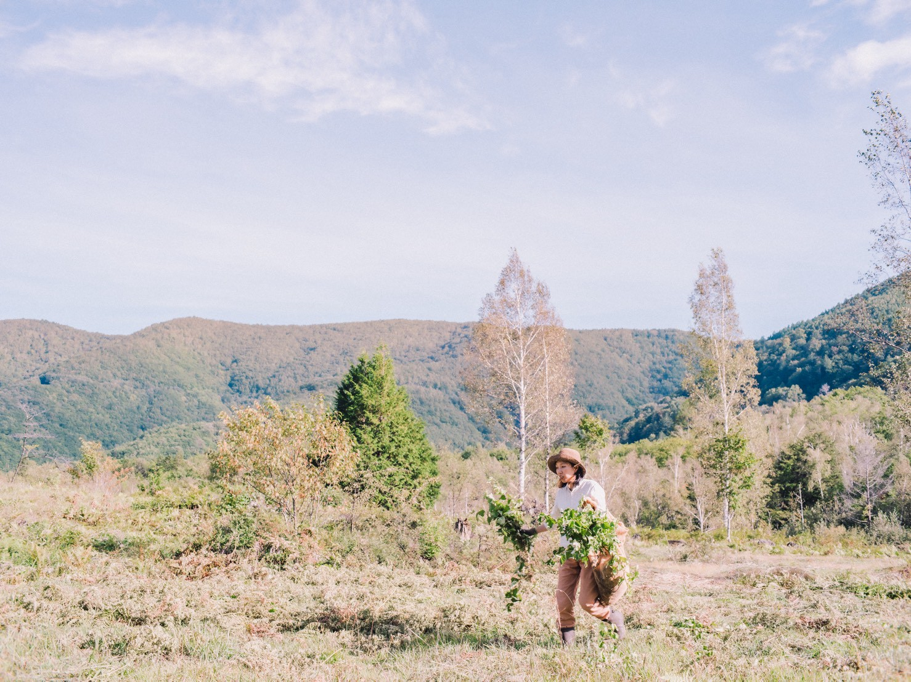
一の瀬草原で行われている草原再生活動で間伐される白樺葉と乗鞍の水を使った蒸留水でつくる、乗鞍の思い出をぎゅっとボトリングしたオリジナルアロマミストづくりを行います。- 日程 7月●日（●）●●：●●〜
- 集合場所 ●●●●●
- 参加費 ●円
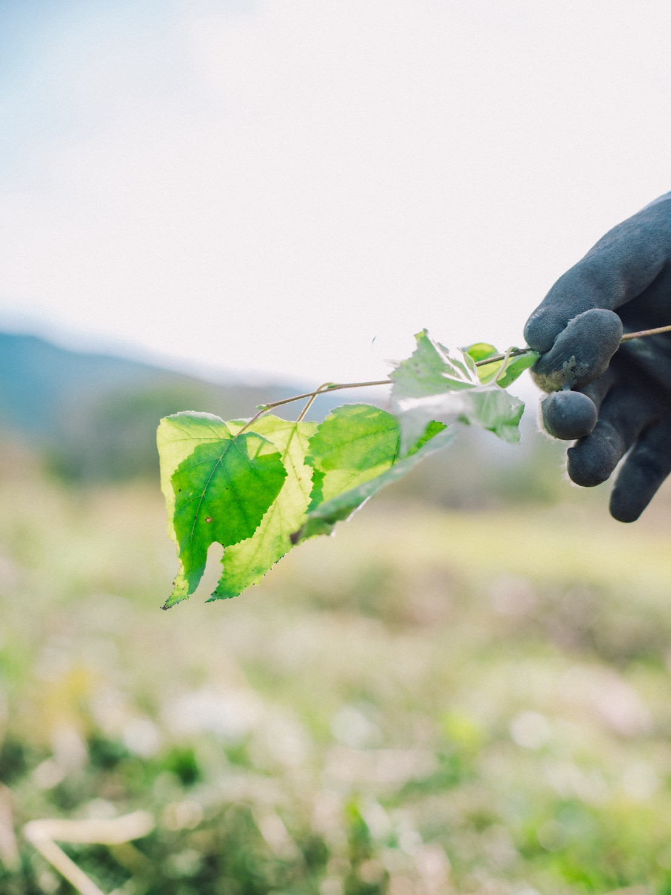
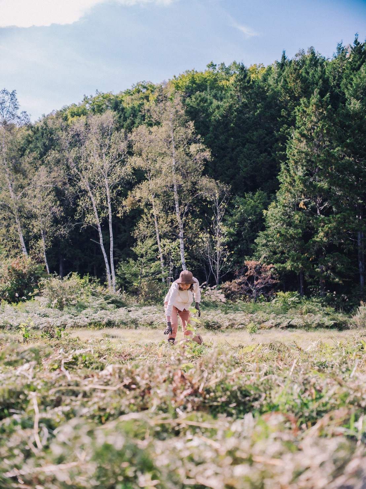
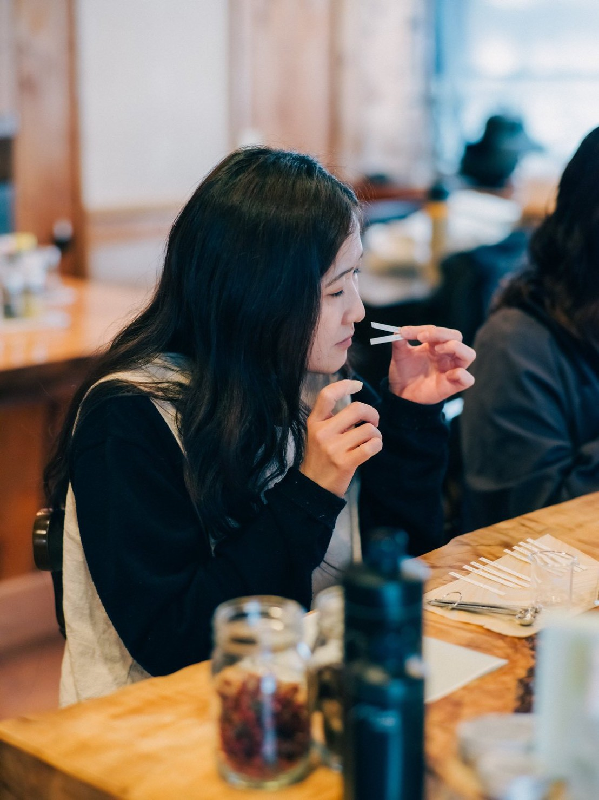
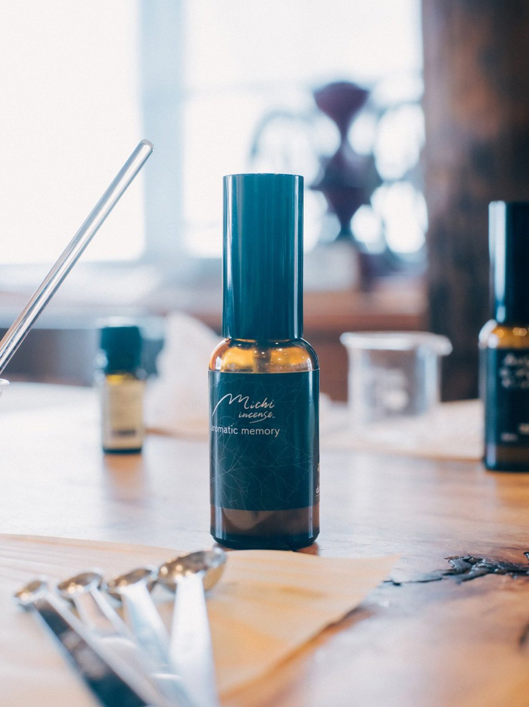
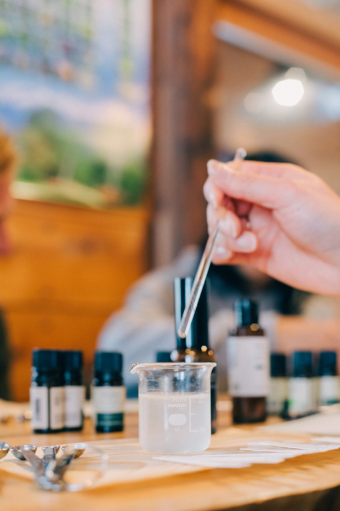
予約はこちら
ほか、25組の出展者がそれぞれに展示やワークショップを行います。
交通案内
自動車の場合、長野自動車道 松本ICより約60分。
公共交通機関の場合
- まずは松本駅へ。 松本駅から先の上高地線および路線バスでは交通系ICは利用できません。現金をご用意ください。
- 松本駅から新島々駅まで、アルピコ交通（鉄道）上高地線で約30分。
- 新島々駅から大野川学校前バス停まで、アルピコ交通（路線バス）乗鞍高原行きで約60分。
- 大野川学校前バス停からすもも荘まで、徒歩3分。ムササビ小屋は、脇道をさらに進んだ場所にあります。
詳しくチェック（アルピコ交通のサイトへ移動）
すもも荘とは
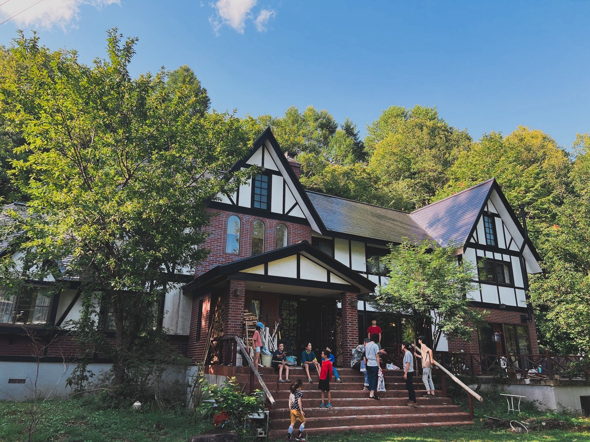
「コリビングハウス乗鞍すもも荘」は、長野県乗鞍高原に位置する親子やクリエイター向けのシェアハウスです。自然豊かな環境の中で共同生活を楽しみながら、リモートワークや創作活動に最適な設備を提供。地域の人々とつながり、温かなコミュニティを築く場所です。
すもも荘のwebサイトをみる
すもも荘の日々
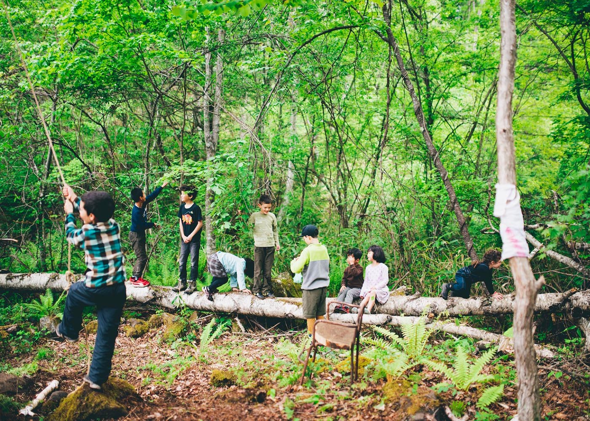
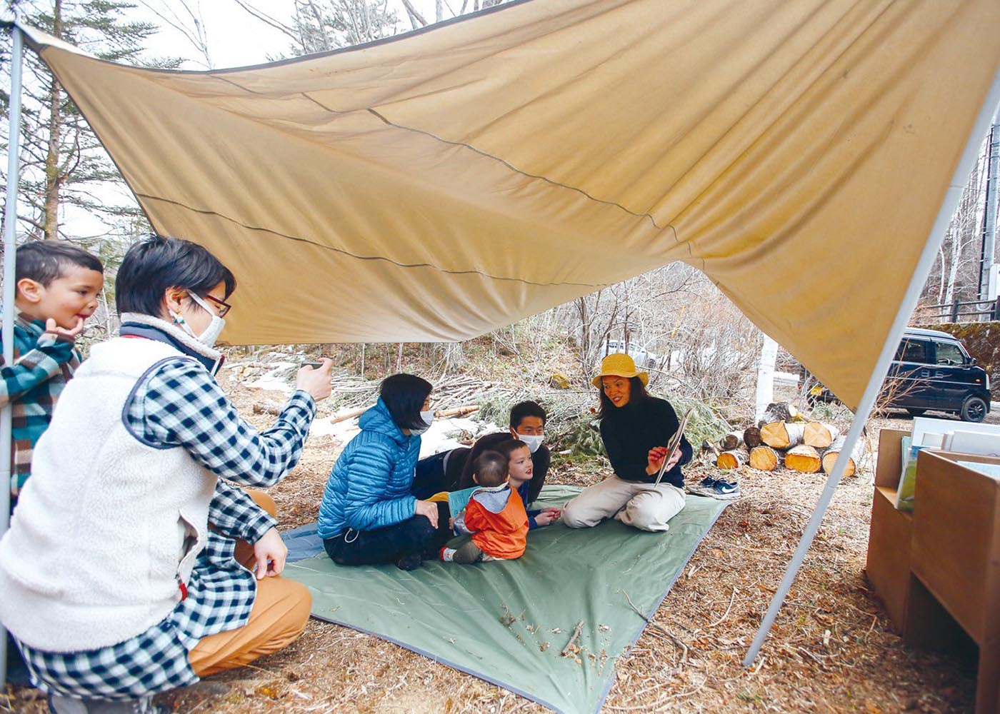
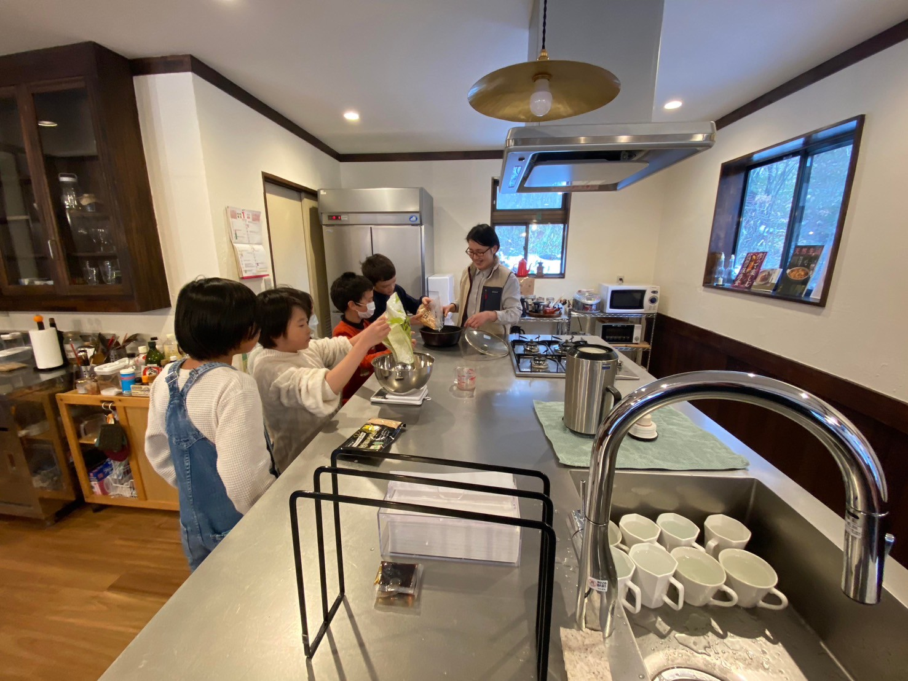
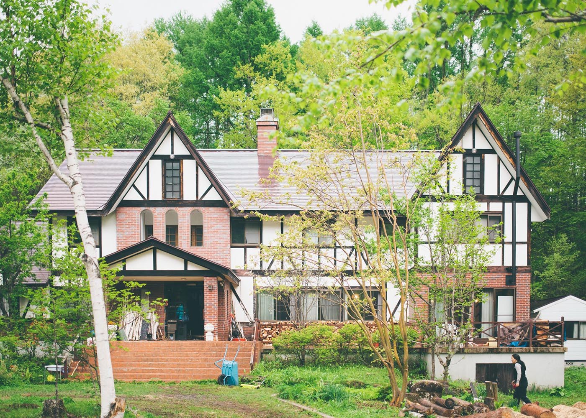
ムササビ小屋とは
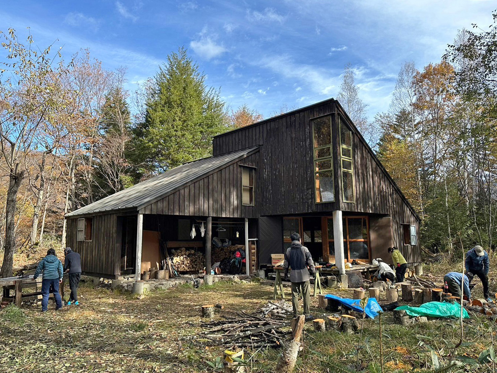
「ムササビ小屋」は、武蔵野美術大学ワンダーフォーゲル部が自分たちで建てた小屋です。現在の2代目ムササビ小屋は30周年を迎え、初代ムササビ小屋を含めると半世紀以上にわたり乗鞍高原を拠点に活動してきました。大学サークルの活動拠点としてだけでなく、アートを通じて地域との交流の場となることを目指しています。